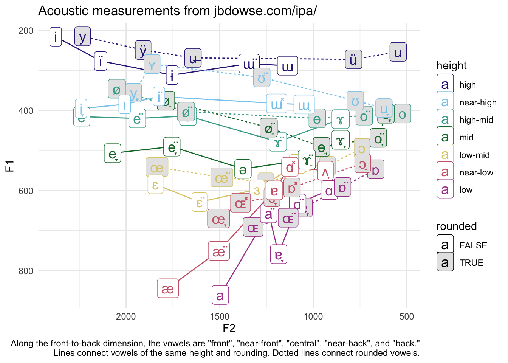

I’ve seen interactive IPA charts where a single person produces all the sounds. But a couple years ago, I was teaching a Phonetics & Phonology course, and I stumbled upon Jonathan Dowse’s IPA extended chart with audio. In this post, I take his vowels and map their formants.
Note that I tweeted about this on February 7, 2022. I don’t know what the future of X holds, so I thought I’d make this a more permanent home for this plot.
Dowse’s IPA chart is the most detailed one I’ve ever seen. The consonants include many more places of articulation not normally found on the IPA chart, like linguolabial, alveolo-palatal, rounded velar, low uvular, and aryepiglottal. For each one, he uses all the manners that are physically possible, including ones like aspirated stop, affricate, taps, and trills. And for each manner and place, he has voiced and voiceless variants. Not only is the chart itself interesting to look through with all the diacritics and stuff, but he’s got recordings of each consonant in different contexts: [C], [Ca], [aC], and [aCa]. Pretty cool. Further down, he has a whole nother table with “rarer” manners, including lateral fricatives, lateral flaps, fricative trills, implosive, and different kinds of ejectives. It’s pretty interesting to listen to them. He also has a whole table of clicks at eight places of articulation, six manners, and velar and uvular variants of each.
Look, I don’t know enough about phonetics to say whether these are all accurately produced, but it’s impressive that Dowse, who does not appear to have much formal training in linguistics, can produce all these sounds.
Today’s post is not about the consonants though; it’s about the vowels. His vowel chart is equally extensive. He contrasts five front-to-back distinctions and seven height distinctions, with rounded and unrounded versions of each one. He also has an entirely separate chart showing nasalized versions of all of these.
Jonathan Dowse’s vowel chart
I do know enough about phonetics to be able to look at these vowels. I was curious about how these 70 vowel qualities mapped to the acoustic space. I wanted to see whether these distinctions were all equidistant and whether their distribution in the acoustic space matched this rectangular tabular layout in the chart.
Data Processing
The first step was to download the audio, which I did by just clicking on each one and downloading them one at a time. I then processed them using FastTrack. This produces in a spreadsheet for each vowel produced, with measurements and bandwidths for the first three formants (plus some other measurements) every few milliseconds. Here’s an example from the high front vowel.
This is more information than I need, especially since Dowse tries to say the vowels as monophthongally as he can. But we can take a look at the trajectories in just a sec.
So, I want to plot the midpoints of all vowels at once. Since each is stored in a separate spreadsheet, I’ll use Sys.glob to get the paths to all those spreadsheets and map the read_csv function onto all of those paths. Since the vowel quality is stored in the filename itself (i.e., “high_front.csv”), I’ll strip away the path and the extension to leave just that filename and use it as the name of the vowel itself. Finally, I’ll take all those spreadsheets and combine them into one big one with bind_rows and unnest.
This results in a spreadsheet with 14,772 rows, each representing a set of formant measurements at a particular point in time across all 70 recordings. Kind of a lot of data, considering it’s only 70 vowels, but that’s the kind of resolution FastTrack can give you.
Okay, so for the purposes of the plot, I need to create a spreadsheet that is just the metadata about the vowel itself. In Step 1, I take that monster dataframe and just keep the name of the vowel (i.e. “high-mid_back-unrounded”) and only keep unique values. I then split that name up into its three parts (height, backness, and rounded) using separate. In Step 2, I then modify each one of those a little bit. I turn rounded into a boolean instead of a string. Then I turn height and backness into factors and set what order they should be in. Finally, I create a marked column to indicate whether a front vowel is rounded or a back vowel is unrounded—I felt like this might be handy to create a visual of the unmarked vowels. For Step 3, I add the IPA symbols to it. There’s no shortcut: I just had to put the symbols in one at a time based on what the chart showed.
# A tibble: 70 × 6
vowel height backness rounded marked ipa
<chr> <fct> <fct> <lgl> <lgl> <chr>
1 high_front high front FALSE FALSE i
2 high_front_rounded high front TRUE TRUE y
3 high_near-front high near-front FALSE FALSE ï
4 high_near-front_rounded high near-front TRUE TRUE ÿ
5 high_central high central FALSE FALSE ɨ
6 high_central_rounded high central TRUE TRUE u̶
7 high_near-back high near-back FALSE TRUE ɯ̈
8 high_near-back_rounded high near-back TRUE FALSE ü
9 high_back high back FALSE TRUE ɯ
10 high_back_rounded high back TRUE FALSE u
# ℹ 60 more rows
Okay, so now I have a dataframe that has the name of the vowel from the filename, and then some metadata about that vowel.
Now let’s go back and process that acoustic data. I start by taking the raw data and just keeping the formants. Having like 170 timepoints for each vowel is fine, but when visualizing such data, the odds of getting a wonky one are higher and it’ll ruin the whole plot. Here’s [i]. You can see that most of the formants are pretty stable. But towards the beginning and end, things get weird and they distract from the good data.
ggplot(high_front, aes(f2, f1, color = time)) +geom_path() +scale_x_reverse() +scale_y_reverse() +theme_minimal()
What I’ll do then is take all this high resolution temporal data and make it lower resolution. What I found works is to bin the times into about 10 bins and then take the median within each one. I’ll do this by first normalizing the time so that the onset starts at t = 0. That new version of time is now time_diff. I’ll then normalize the time by converting it into percent duration, so that the onset is at 0 and the offset is at 1, with the midpoint at 0.5. That is now in percent. This makes it easier to then slice the data into 10 parts using the santoku::kiru function. For each of those 10 chunks, I can then get the median F1, F2, and F3 measurements.
I can plot this new lower-resolution version of the data, and you can see it’s much tighter because the extreme outliers were lost. I’ll add the original data in gray to provide some context.
Okay great. So, that worked for one vowel. Let’s do that for all vowels. The code is the same, except I’m grouping things by vowel. This results in trajs dataframe (for “trajectories”). We’ll look at that in just a second.
For now, let’s look at the midpoints. You may have noticed in the high front plot above that the middle 50% or so of the vowel was indeed quite monophthongal with very little formant change. I’ll assume that’s the case for all the vowels. So I’ll take the middle few bins and take the median measurement for each one. That’ll give me a new midpoints dataset.
midpoints <- trajs %>%# Get the middle few bins and find the medianfilter(time_cut %in%3:7) %>%summarize(across(c(f1, f2, f3), median), .by = vowel) %>%# Add the vowel metadata back in.left_join(vowels_meta, by ="vowel") %>%print()
# A tibble: 70 × 9
vowel f1 f2 f3 height backness rounded marked ipa
<chr> <dbl> <dbl> <dbl> <fct> <fct> <lgl> <lgl> <chr>
1 high_back_rounded 254. 546. 2434. high back TRUE FALSE u
2 high_back 288. 1137. 2467. high back FALSE TRUE ɯ
3 high_central_rounded 269. 1642. 2128. high central TRUE TRUE u̶
4 high_central 312. 1754. 2229. high central FALSE FALSE ɨ
5 high_front_rounded 215. 2232. 2865. high front TRUE TRUE y
6 high_front 216. 2376. 3227. high front FALSE FALSE i
7 high_near-back_rounded 272. 784. 2233. high near-ba… TRUE FALSE ü
8 high_near-back 283 1342. 2234. high near-ba… FALSE TRUE ɯ̈
9 high_near-front_round… 249 1909. 2153. high near-fr… TRUE TRUE ÿ
10 high_near-front 276. 2136. 2460. high near-fr… FALSE FALSE ï
# ℹ 60 more rows
Okay, we now have a spreadsheet with reasonably good midpoint measurements for each vowel.
Plotting midpoints
It’s now time to plot it! Here’s just a raw look at the data.
Okay, so interesting already because we can see that the overall shape is a trapezoid still and not a square. We can see that the lower back portion of the vowel space is a bit denser than, say, the high front. And there’s a bit of a gap in the mid-to-high central portion.
Let’s zhuzh this plot up a bit. I’ll color the vowels by height. Within each height, I’ll connect rounded vowels with a dotted line and unrounded vowels with a solid line. To do that, I’ll create a new column that has a unique value for vowel height before I pass it into ggplot. I’ll color rounded vowels in gray. Finally, I’ll add some annotations.
midpoints %>%unite(line_id, height, rounded, remove =FALSE) %>%ggplot(aes(f2, f1, color = height, shape = backness)) +geom_line(aes(group = line_id, linetype = rounded)) +geom_label(aes(label = ipa, fill = rounded), size =5) +scale_fill_manual(values =c("white", "gray90")) +scale_x_reverse() +scale_y_reverse() + ggthemes::scale_color_ptol() +labs(title ="Acoustic measurements from jbdowse.com/ipa/",x ="F2", y ="F1",caption ='Along the front-to-back dimension, the vowels are "front", "near-front", "central", "near-back", and "back."\nLines connect vowels of the same height and rounding. Dotted lines connect rounded vowels.',) +theme_minimal()

Okay, now we’re starting to see some things! So, it looks like rounded vowels are pretty consistently further back than their unrounded counterparts. In some cases, drastically so (see [ɯ] compared to [u]). F2 is pretty level across most of the higher vowels. Among the low vowels, the further back they were the higher they were. Here we can better see the clustering in the low back portion of the vowel space. This also gives some nice context for the Moulton (1968:464), who says that the fieldworkers for the Linguistic Atlas of New England were “hopelessly and humanly incompetent at transcribing phonetically the low and back vowels they heard from their informants” (cited in Johnson 2010:32). Given a spot in the low back portion of the vowel space, there are lots of ways to transcribe it that would come pretty darn close.
Let’s pause and just make sure we’re on the same page when it comes to mapping acoustics to perception. I’m not saying that Dowse was wrong. I don’t make this plot just to point and laugh and say, “wow, he sure did a terrible job!” I haven’t like measured out my perception or anything, but with only a few exceptions the vowels sound more or less equidistant from each other to me. So, what this really shows is that there’s a pretty stark difference between what is perceptually equidistant and what is acoustically equidistant. Perhaps what this is showing is that we can actually hear small distances between vowels in the low back space more than in the high front space. Or perhaps Dowse was a little too ambitious at creating an artificially inflated number of low back distinctions and that we should stick with the trapezoidal shape that the IPA chart has. I don’t know. But I’m sure there’s some interesting paper from the 70s or something that has been written about this.
Let’s clean the vowel chart up a little bit by removing the rounded front vowels and the unrounded back vowels.
Okay, so this is a little bit sparser I don’t know if there’s any new insight here, other than the middle of the vowel space really opens up quite a bit.
Plotting trajectories
Since we have trajectory data, let’s plot some of those. I’ll have to reshape the data so that all the formant data shows up into a single column. I’ll use pivot_longer to do that, which you can read more about how it’s helpful for such vowel data here. If we just look at the high front data, we can see what that looks like.
Nothing too surprising here. We’ve got a lot of lines that are relatively stable. Towards the ends, most formants shift a little bit. Not sure why. A few others have some movement in other places. But, you’ve got to appreciate Dowse’s ability to hold a monophthong.
We can view this in a traditional F1-F2 plot. Here I’ve filtered out the edges because they had a lot of really wonky measurements, so this shows between 20% into the duration of the vowel and 70% into the duration of the vowel.
trajs %>%left_join(vowels_meta, by ="vowel") %>%filter(time_cut %in%c(2:7)) %>%ggplot(aes(f2, f1, color = height)) +geom_line(aes(group = vowel), arrow = joeyr::joey_arrow()) +scale_x_reverse() +scale_y_reverse() + ggthemes::scale_color_ptol() +labs(title ="Trajectories from jbdowse.com/ipa/",x ="F2", y ="F1") +theme_minimal()
Overall, you can see that Dowse does a good job at holding a monophthong. The higher vowels are generally pretty monophthongal. The lower the vowel, the more back-gliding it is. Low vowels appear to be less stable in height.
Conclusion
When I found Dowse’s vowel chart, I wanted to see what the acoustics were. I think it’s pretty enlightening to see how acoustic differences map onto perceptual distances and vice versa.